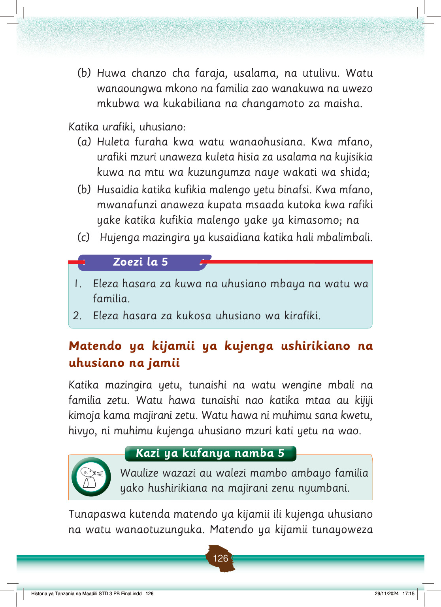

(b) Huwa chanzo cha faraja, usalama, na utulivu.
Watu wanaoungwa mkono na familia zao wanakuwa na uwezo mkubwa wa kukabiliana na changamoto za maisha.
Katika urafiki, uhusiano:
(a) Huleta furaha kwa watu wanaohusiana.
Kwa mfano, urafiki mzuri unaweza kuleta hisia za usalama na kujisikia kuwa na mtu wa kuzungumza naye wakati wa shida;
(b) Husaidia katika kufikia malengo yetu binafsi.
Kwa mfano, mwanafunzi anaweza kupata msaada kutoka kwa rafiki yake katika kufikia malengo yake ya kimasomo; na
(c) Hujenga mazingira ya kusaidiana katika hali mbalimbali.
Zoezi la 5
1. Eleza hasara za kuwa na uhusiano mbaya na watu wa familia.
2. Eleza hasara za kukosa uhusiano wa kirafiki.
Matendo ya kijamii ya kujenga ushirikiano na uhusiano na jamii
Katika mazingira yetu, tunaishi na watu wengine mbali na familia zetu.
Watu hawa tunaishi nao katika mtaa au kijiji kimoja kama majirani zetu.
Watu hawa ni muhimu sana kwetu, hivyo, ni muhimu kujenga uhusiano mzuri kati yetu na wao.
Kazi ya kufanya namba 5
Waulize wazazi au walezi mambo ambayo familia yako hushirikiana na majirani zenu nyumbani.
Tunapaswa kutenda matendo ya kijamii ili kujenga uhusiano na watu wanaotuzunguka.
Matendo ya kijamii tunayoweza
Historia ya Tanzania na Maadili STD 3 PB Final.indd 126